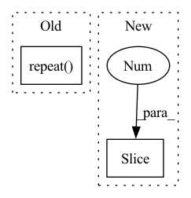

Pattern ID :28054
Before Change
zvals, _ = torch.sort(zvals, dim = -1)
sample_pnum = f_zvals.shape[1] + c_zvals.shape[1]
// Use sort depth to calculate sampled points
raw_pts = rays.repeat(repeats = (1, 1, sample_pnum)) .view(rays.shape[0], sample_pnum, -1)
// depth * ray_direction + origin (this should be further tested)
raw_pts[:, :, :3] += zvals[:, :, None] * raw_pts[:, :, 3:]
return raw_pts, zvals // output is (ray_num, coarse_pts num + fine pts num, 6)After Change
// Use sort depth to calculate sampled points
pts = rays[...,None,:3] + rays[...,None,3:] * zvals[...,:,None]
// depth * ray_direction + origin (this should be further tested)
return torch.cat((pts, rays[:, 3 :].unsqueeze(-2).repeat(1, sample_pnum, 1)), dim = -1), zvals // output is (ray_num, coarse_pts num + fine pts num, 6)
This function is important for inverse transform sampling, since for every rayIn pattern: SUPERPATTERN
Frequency: 3
Non-data size: 2
Instances Fragment ID: 83013995
Project Name: enigmatisms/nerf
Commit Name: 926e53d582b75b6d41aa6ffb38432e21706adc6f
Time: 2022-04-14
Author: 984041003@qq.com
File Name: py/model.py
M Class Name: NeRF
N Class Name: NeRF
M Method Name: coarseFineMerge(3)
N Method Name: coarseFineMerge(3)
M Parent Class: nn.Module
N Parent Class: nn.Module
M File Name: py/model.py
N File Name: py/model.py
M Start Line: 106
M End Line: 113
N Start Line: 117
N End Line: 123
Before Change
gamma = CalculateGamma(input, block_size=self.block_size, keep_prob=self.keep_prob)
input_shape = input.shape
p = gamma.repeat( input_shape)
input_shape_tmp = input.shape
random_matrix = torch.rand(input_shape_tmp, device=input.device)
one_zero_m = (random_matrix < p).float()After Change
if self.data_format == "NCHW":
shape = x.shape[2:]
else:
shape = x.shape[1:3 ]
for s in shape:
gamma *= s / (s - self.block_size + 1)
Fragment ID: 83013998
Project Name: miemie2013/miemiedetection
Commit Name: aabe1f2d364493c30179de6cf7d5c2d0c6ee7258
Time: 2021-12-30
Author: 53960695+miemie2013@users.noreply.github.com
File Name: mmdet/models/custom_layers.py
M Class Name: DropBlock
N Class Name: DropBlock
M Method Name: forward(2)
N Method Name: forward(2)
M Parent Class: torch.nn.Module
N Parent Class: torch.nn.Module
M File Name: mmdet/models/custom_layers.py
N File Name: mmdet/models/custom_layers.py
M Start Line: 538
M End Line: 576
N Start Line: 724
N End Line: 745
Before Change
relative_mesh_pos = torch.sub(ripple_nodes_mesh_pos, highest_velocity_node_mesh_pos)
print("highest velocity node feature shape before repeat", highest_velocity_node_feature.shape)
print("highest velocity node feature shape", torch.unsqueeze(highest_velocity_node_feature, dim=0).repeat( ripple_nodes_feature.shape[0].shape) )
ripple_and_highest_info = torch.cat((highest_velocity_node_feature.repeat(ripple_nodes_feature.shape[0]), ripple_nodes_feature, relative_world_pos, relative_mesh_pos), dim=-1)
ripple_and_highest_result = self.ripple_model(ripple_and_highest_info)
latent_graph.node_features[ripple_nodes_index] += ripple_and_highest_resultAfter Change
end_index = start_index + actual_chunk_size
actual_ripple_size = ripple_size if ripple_size <= actual_chunk_size else actual_chunk_size
random_select_mask = torch.randperm(n=actual_chunk_size)
random_select_mask = random_select_mask[0:actual_ripple_size ]
info_of_a_ripple = velocity_matrix[start_index:end_index]
info_of_a_ripple = info_of_a_ripple[random_select_mask]
ripple_nodes_feature.append(info_of_a_ripple) Fragment ID: 83013996
Project Name: wwmark/meshgraphnets
Commit Name: a5ca5ffdfaa9a28d216c8d4b6b50caba36669d7b
Time: 2021-10-25
Author: ruoheng.ma@gmail.com
File Name: encode_process_decode_hub.py
M Class Name: Processor
N Class Name: Processor
M Method Name: forward(3)
N Method Name: forward(3)
M Parent Class: nn.Module
N Parent Class: nn.Module
M File Name: encode_process_decode_hub.py
N File Name: encode_process_decode_hub.py
M Start Line: 213
M End Line: 254
N Start Line: 233
N End Line: 274